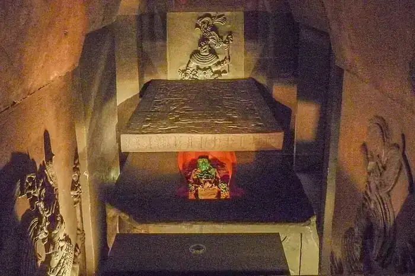
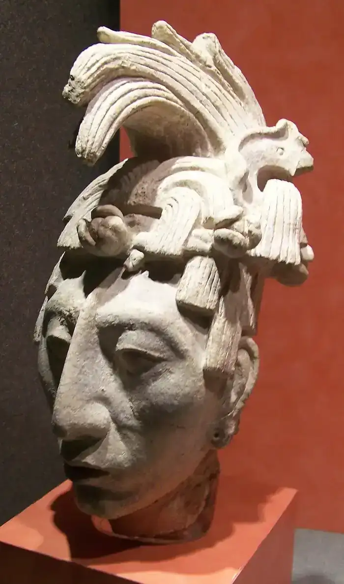
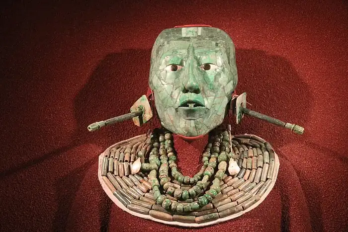

The image
K'inich Janaab' Pakal was a Maya king of Palenque who died in 683 AD. His sarcophagus lid, carved in relief, shows a central figure in an elaborate posture, surrounded by iconography: a tree, a sky band, ancestral figures, and a border of glyphs.
Maps, diagrams and images






In 1968 Erich von Däniken published a reading of the lid as an astronaut: the figure seated in a capsule, hands on controls, feet on pedals, with flames beneath. The image became one of the most reproduced in the ancient-astronaut literature.
The Maya reading
The iconography is well studied. The central figure is Pakal, shown at the moment of death and descent into the underworld, framed by the world tree — a standard Maya composition for a royal death and rebirth. The 'controls' are jewellery and gesture; the 'flames' are the stylised jaws of the underworld; the 'capsule' is the frame of the cosmos.
The reading requires no knowledge of Maya script or iconography, which is why it was possible. Scholars had read the scene decades before, and the glyphs around the lid identify the figures.
Documented: the lid, its date, its patron, and its iconography.
Documented: the Maya reading, supported by the glyphs and by comparable monuments.
Not established: any spacecraft, astronaut or technology.
Why it persists: because the image is dense and unfamiliar, and because a caption is easier than an iconographic argument.
Why the label is debunked: the alternative reading is documented, contemporaneous and supported by text.
Why it is in the archive
Because it is the most reproduced image in the ancient-astronaut genre, and the refutation is available in the same museum: the glyphs on the lid say who is on it.
Open resources on this topic
- PapersOpen-access articles: DOAJ · PubMed Central · Internet Archive Scholar
- BooksPublic-domain and borrowable copies: Open Library · Project Gutenberg · Google Books · Internet Archive
Cite this page
Momin, S. (2026). Pakal's Rocket. The Larger World Archive. https://drsamonline.github.io/LARGE_GLOBE/pakal-rocket.htmlMomin, Sohil. “Pakal's Rocket.” The Larger World Archive, 2026, https://drsamonline.github.io/LARGE_GLOBE/pakal-rocket.html.Momin, Sohil. “Pakal's Rocket.” The Larger World Archive, 2026. https://drsamonline.github.io/LARGE_GLOBE/pakal-rocket.html.@misc{pakals2026pakal,
author = {Momin, Sohil},
title = {Pakal's Rocket},
year = {2026},
howpublished = {The Larger World Archive},
url = {https://drsamonline.github.io/LARGE_GLOBE/pakal-rocket.html},
note = {Last reviewed 20 November 2026}
}Last reviewed 20 November 2026 · Corrections policy · this page is not peer reviewed
Sources for this page
- Wikipedia, “K'inich Janaab' Pakal” — the king and his tomben.wikipedia.org
- Wikipedia, “Palenque” — the site and the Temple of the Inscriptionsen.wikipedia.org
- Wikipedia, “Maya mythology” — the world tree and the underworlden.wikipedia.org
- Wikipedia, “Ancient astronauts” — the genre and its criticismen.wikipedia.org